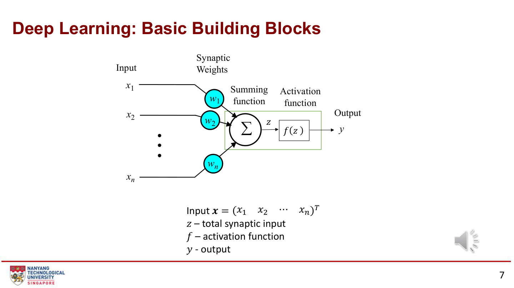
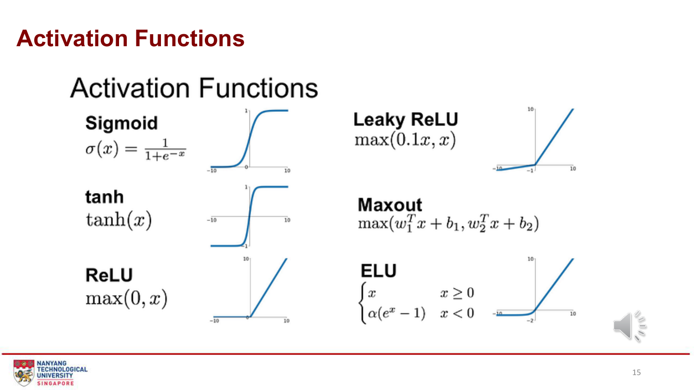
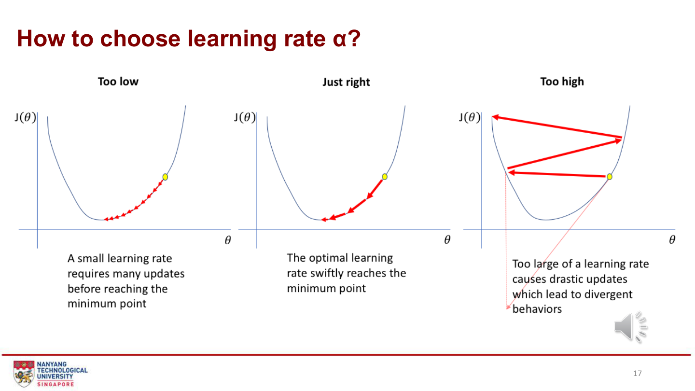
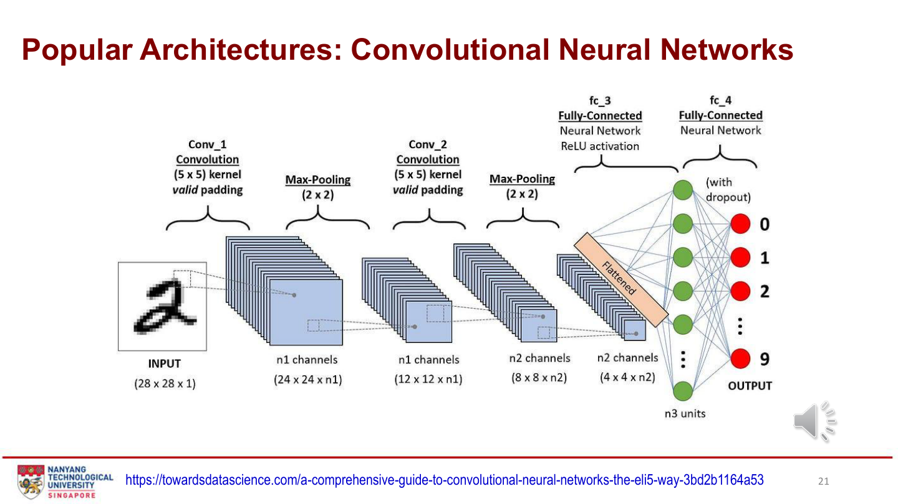
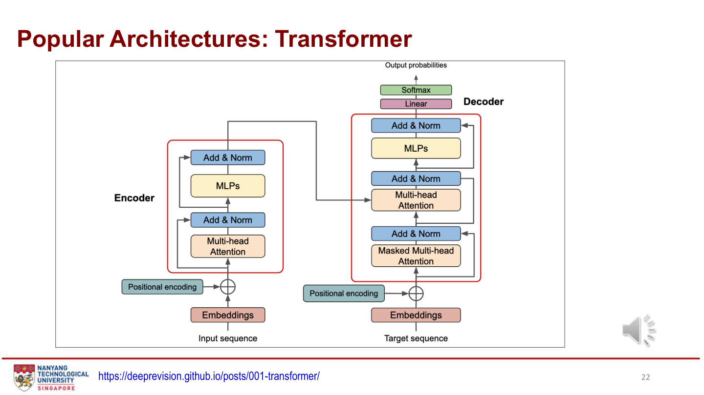
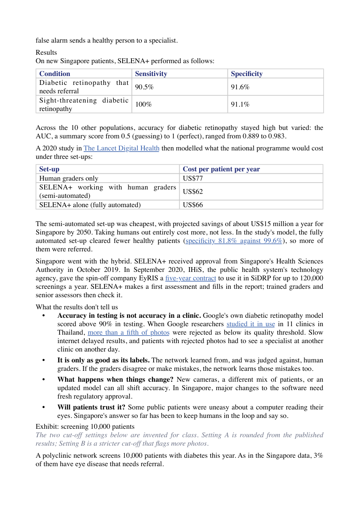
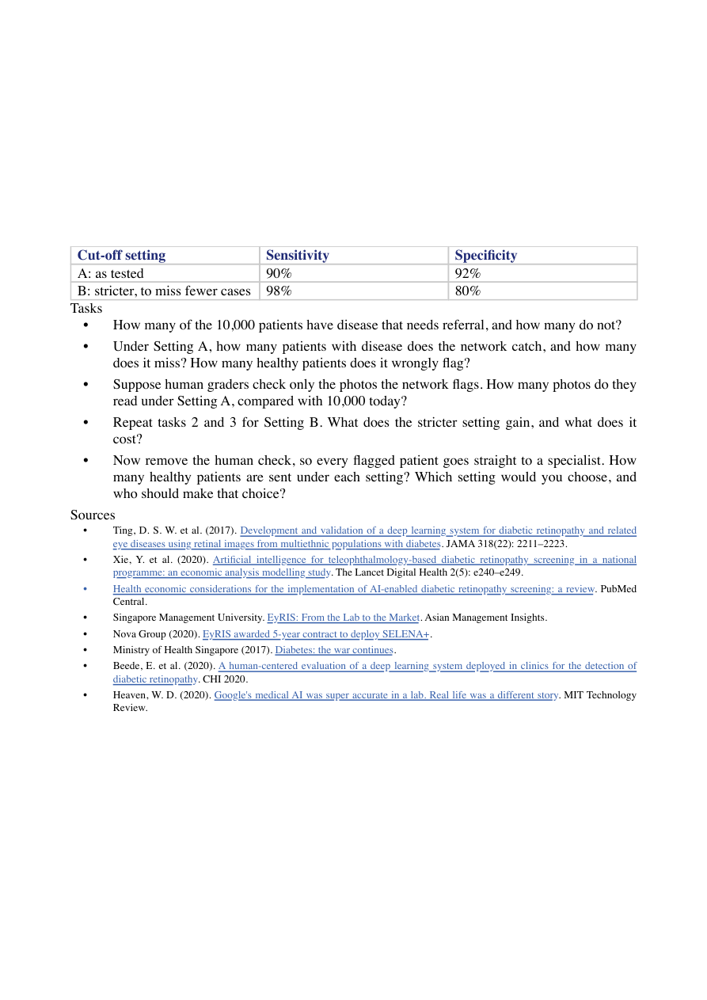

第三周：深度学习
从一个神经元的加权和开始，沿着预测 → 损失 → 梯度 → 参数更新理解训练，再认识 CNN、Transformer，并用 MNIST 和 SELENA 筛查案例检验理解。
来源：Dr Zhang Jiehuang，CA6001_Deep Learning.pdf（28 页，标题 Chapter 3；结尾沿用 Chapter 9）；Deep_Learning_Tutorial.ipynb、Deep_Learning_Tutorial 2.ipynb，以及 SELENA_DL_Case_CA6001_Student.pdf（3 页，明确标注 Week 3）。按主课件顺序整理，页码为 PDF 页序；额外解释标为学习补充。Notebook 示例供理解与运行，不代表已经取得某个测试准确率。
What Is Deep Learning?
本章图表 / 方法：主课件第 3–5 页：AI、ML、DL 的包含关系与特征学习对比。
AI ⊃ Machine Learning ⊃ Deep Learning。深度学习用多层神经网络学习数据表示：低层提取较简单的特征，高层组合成复杂模式。它受到生物神经元启发，但人工神经元是数学模型。
用鸟的图片理解：输入是像素，低层可能学到边缘，中间层组合纹理与形状，后层产生类别分数。“自动学习特征”仍需要人决定任务、数据、模型结构、损失和评价方式。
| 比较 | 课件中的传统 ML | Deep Learning |
|---|---|---|
| 特征 | 较多依赖人工构造 | 训练中学习多层表示 |
| 数据与计算 | 较小数据、CPU 也可用 | 常受益于大量数据与 GPU/TPU |
| 任务 | 结构化任务可用简单模型 | 擅长图像、文本等复杂模式 |
学习补充：这是一般趋势，不是硬性要求。传统 ML 也可以学习特征；深度学习也能通过迁移学习用于较小数据集，并非全部依赖人工标签。
Why the Resurgence of Deep Learning?
本章图表 / 方法：第 6 页：性能与数据量的关系；Tutorial 1 的三个原因。
三个因素共同推动复兴：更多可用数据、更强计算能力、架构与训练算法进步。课件图示强调深度网络在数据增多时可能继续改善性能；不能从示意图推断任何任务都必定优于简单模型。
先问：数据是否代表目标场景？标签是否可靠？是否有足够计算资源？更多层、更多数据都不能自动纠正数据偏差。
Building Blocks: Neural Networks
本章图表 / 方法：第 7–8 页：人工神经元、输入、权重、偏置、激活和网络层。


| 符号 / 术语 | 含义 | 具体例子 |
|---|---|---|
| x / Input | 已知输入，不是待学习参数 | 面积、卧室数，或图像像素 |
| w / Weight | 输入对输出的影响，训练中学习 | 面积对应的系数 |
| b / Bias | 整体平移输出的可学习参数 | 输入为零时仍可有基准值 |
| z / Pre-activation | 激活前的加权和 | z = Σwᵢxᵢ + b |
| a / Activation | 激活后的输出 | a = f(z) |
| Hidden / Output Layer | 中间表示 / 最终任务输出 | 784 → 128 → 64 → 10 |
记号核对：课件用 y 表示神经元输出；本页用 a 表示中间输出、ŷ 表示模型预测、y 表示真实标签，避免混淆。输入层通常不计入可训练层数；看到“4 层网络”应先查看计数约定。
Forward and Backward Propagation
本章图表 / 方法：第 9–12 页：训练与推理的差异；预测、损失、链式法则。
前向：输入 → 加权和 → 激活 → 下一层 → 预测 ŷ。单个神经元的标准形式是 z = w₁x₁ + w₂x₂ + … + b，a = f(z)。
训练：把 ŷ 与真实 y 放入损失函数，反向传播按链式法则计算损失对每个参数的梯度；优化器再更新参数。推理：使用已训练的参数做前向计算，通常无需标签、反向传播或更新。
课件第 12 页把 BP 的用途概括为“更新权重”。实现时要分清：反向传播计算梯度，Gradient Descent / 优化器执行更新。算出梯度不等于参数已经改变；训练也不保证达到全局最优。
# 学习补充：一维线性模型，展示完整训练步骤
x, y = 2.0, 3.0
w, b, alpha = 1.0, 0.0, 0.1
prediction = w * x + b # 前向：2.0
loss = (prediction - y) ** 2 # 损失：1.0
grad_w = 2 * (prediction - y) * x # -4.0
grad_b = 2 * (prediction - y) # -2.0
w = w - alpha * grad_w # 更新：1.4
b = b - alpha * grad_b # 更新：0.2
print(w, b, w * x + b) # 1.4, 0.2, 约 3.0这里输入 x 和标签 y 保持不变；改变的是 w、b。单样本刚好改善不代表所有训练样本或新数据都会改善。
Gradient Descent & Activation Functions
本章图表 / 方法：第 13–17 页：梯度下降、激活曲线、学习率与 Playground。
更新规则：θ ← θ − α · ∂L/∂θ。θ 代表任一权重或偏置，L 是损失，α 是学习率。正梯度通常令参数下降，负梯度令参数上升；不能说所有权重都必须减小。
非线性激活让多层网络表达复杂关系。若每层只做线性 / 仿射变换，多层的组合仍可折叠成一次仿射变换。


| 激活 | 公式 / 范围 | 用途与边界（学习补充） |
|---|---|---|
| Sigmoid | 1 / (1 + e⁻ᶻ)，(0,1) | 常用于二分类输出；饱和时梯度小 |
| tanh | tanh(z)，(-1,1) | 输出以零为中心；也可能饱和 |
| ReLU | max(0,z) | 常用于隐藏层；负区间梯度为零 |
| Leaky ReLU | max(λz,z) | 保留负区间斜率；图中 λ=0.1 |
| Maxout | max(w₁ᵀx+b₁,w₂ᵀx+b₂) | 取多个仿射输出的最大值，参数更多 |
| ELU | z≥0 时 z；否则 λ(eᶻ−1) | 负区间平滑，需选择 λ |
| Softmax | exp(zᵢ) / Σexp(zⱼ) | Tutorial 中 10 个互斥数字类别的概率输出 |


α 太小，训练慢；太大，可能震荡或发散。比较训练 / 验证损失曲线，而非只看单步下降。TensorFlow Playground 是第 16 页互动练习：固定数据后，分别改变激活、隐藏层和学习率，观察决策边界与损失，不同时改所有变量。
Prediction & Fully Connected Layers
本章图表 / 方法：第 18–20 页：回归、分类、Dense、Dropout、L2 与鸟图像输入。
回归预测连续值，分类预测类别。Dense 层让每个输出节点连接前一层所有输入；隐藏层组合特征，输出层和损失必须匹配任务。预训练模型是在其他数据上训练得到的模型，新场景仍需评价适用性。
| 任务 | 典型输出（学习补充） | 标签与损失 |
|---|---|---|
| 房价回归 | 1 个线性输出 | 连续价格；MSE |
| 二分类 | 1 个 Sigmoid 输出 | 0/1；二元交叉熵 |
| MNIST 十分类 | 10 个 Softmax 输出 | 整数 0–9；稀疏分类交叉熵 |
Dropout 在训练时随机屏蔽部分节点，推理时停止这种随机屏蔽；L2 对大权重施加惩罚。两者约束复杂度，不保证必定提升新数据性能。
Popular Architectures: CNN
本章图表 / 方法：第 21 页：卷积、池化、Flatten 与全连接分类。


卷积核在局部窗口重复使用相同权重，提取空间模式；不同卷积核形成不同通道。池化降低空间尺寸；Flatten 把空间特征展开供 Dense 分类。
按图中 valid padding、卷积步幅 1 和池化步幅 2：28 → 24 → 12 → 8 → 4。学习补充：卷积尺寸公式为 ⌊(N + 2P − K)/S⌋ + 1；padding、kernel 和 stride 改变输出尺寸。池化不负责学习卷积权重，Flatten 本身没有可训练参数。
Popular Architectures: Transformer & Self-Attention
本章图表 / 方法：第 22–24 页：Encoder / Decoder、位置编码、Q/K/V 和代词语境。


课件句子：“The quick brown fox jumped over the wall… It was so agile.” 识别 It 的指代需要语境。Attention 根据相关性加权输入信息；Self-Attention 的 Q、K、V 都由同一输入序列投影得到。
- Embedding：词元变为向量；位置编码提供顺序信息。
- Query 表示当前要找的信息，Key 用于匹配，Value 是被汇总的信息。
- 点积 QKᵀ 后除以 √dₖ，再用 Softmax 归一化。
- 用注意力权重加权求和 V：Attention(Q,K,V) = softmax(QKᵀ/√dₖ)V。
学习补充：双向上下文不是所有 Transformer 都具有。图中 Decoder 的 masked attention 遮住未来词元，生成时不能读取尚未生成的内容；Encoder 可看完整输入。注意力权重不是因果解释，也不保证自动正确理解代词。
Applications, Challenges and Limitations
本章图表 / 方法：第 25–26 页：应用领域及数据、计算、解释、伦理和泛化问题。
课件举例：视觉中的检测与识别；NLP 中的翻译与情感分析；医疗中的诊断辅助与药物发现；自动驾驶和机器人；金融中的欺诈检测。实际收益要结合独立评价和业务流程判断。
| 限制 | 需要核对的问题 |
|---|---|
| 数据量与质量 | 标签可靠吗？数据覆盖实际用户吗？ |
| 计算成本 | 训练和部署的资源、时延是否可接受？ |
| 可解释性 | 错误时能否追踪输入、版本和流程？ |
| 伦理、隐私与偏差 | 哪些人群表现较差？数据访问是否合适？ |
| 过拟合与泛化 | 是否只记住训练样本？新设备和人群会否改变表现？ |
Tutorial 1 · Basic Programming
本章图表 / 方法：Notebook 1：四道基础题，保留学习者作答空间。
这些题练习神经网络所需的 Python 基础；该 Notebook 目前没有实际训练完整分类网络。按以下顺序逐题运行，不必先使用框架。
| 原题 | 思路 / 判断标准 | 常见误区 |
|---|---|---|
| 1 加权和 | 输入 0.5、0.8、0.2；权重 0.3、0.6、0.1；逐项乘后求和，约 0.65 | 把输入相加再乘总权重 |
| 2 ReLU | 实现 relu(x)；测试 5、−2、0，得到 5、0、0 | ReLU 不是更新权重 |
| 3 Min-Max | [10,20,30,40,50] → [0,.25,.5,.75,1]；(x−min)/(max−min) | 常量列需避免除零；训练拟合后用于验证 / 测试 |
| 4 正负计数 | [1,−5,3,−10,7,0,−2,9] 中正数 4、负数 3 | 零既不是正数也不是负数 |
# 练习骨架：自己填入函数体
inputs = [0.5, 0.8, 0.2]
weights = [0.3, 0.6, 0.1]
# weighted_sum = ...
def relu(x):
pass # 根据题目规则填写
# 接着完成 Min-Max 与正负计数Tutorial 2 · Q1: MNIST Architecture
本章图表 / 方法：概念问答与 Q1（40 points）：输入、隐藏层、输出、激活、训练和评价。
原题：神经网络如何学习非线性？为 MNIST 手写数字设计网络，说明输入尺寸、隐藏层数量与大小、输出及每层激活，并解释选择。
Notebook 示例：28×28 灰度图 → Flatten 784 → Dense 128/ReLU → Dense 64/ReLU → Dense 10/Softmax。128、64 是可调设计，不是唯一正确答案。输入归一化到 [0,1]，标签仍是整数 0–9。
import tensorflow as tf
from tensorflow.keras import layers, models
import matplotlib.pyplot as plt
import numpy as np
# 1. Load and prepare the MNIST dataset
mnist = tf.keras.datasets.mnist
(x_train, y_train), (x_test, y_test) = mnist.load_data()
# Normalize pixel values to be between 0.0 and 1.0
x_train, x_test = x_train / 255.0, x_test / 255.0
print(f"Training data shape: {x_train.shape}")
print(f"Test data shape: {x_test.shape}")
# 2. Define the Neural Network Architecture (Example Solution)
model = models.Sequential([
# Input Layer: Flatten the 28x28 images into a 1D vector of 784 features
layers.Flatten(input_shape=(28, 28), name='Input_Layer'),
# Hidden Layer 1: Dense layer with 128 units and ReLU activation
layers.Dense(128, activation='relu', name='Hidden_Layer_1'),
# Hidden Layer 2: Dense layer with 64 units and ReLU activation
layers.Dense(64, activation='relu', name='Hidden_Layer_2'),
# Output Layer: 10 units (one for each digit 0-9) with Softmax activation
layers.Dense(10, activation='softmax', name='Output_Layer')
])
# Display the network's structure
model.summary()
# 3. Compile the Model
# We define the optimizer (Gradient Descent variant), the loss function, and evaluation metrics
model.compile(
optimizer='adam',
loss='sparse_categorical_crossentropy',
metrics=['accuracy']
)
# 4. Train the Model
history = model.fit(x_train, y_train, epochs=5, validation_split=0.1, batch_size=64)
# 5. Visualize Training Performance
plt.figure(figsize=(12, 4))
# Plot training & validation accuracy values
plt.subplot(1, 2, 1)
plt.plot(history.history['accuracy'], label='Train Accuracy')
plt.plot(history.history['val_accuracy'], label='Validation Accuracy')
plt.title('Model Accuracy')
plt.xlabel('Epoch')
plt.ylabel('Accuracy')
plt.legend()
plt.grid(True)
# Plot training & validation loss values
plt.subplot(1, 2, 2)
plt.plot(history.history['loss'], label='Train Loss')
plt.plot(history.history['val_loss'], label='Validation Loss')
plt.title('Model Loss')
plt.xlabel('Epoch')
plt.ylabel('Loss')
plt.legend()
plt.grid(True)
plt.show()
# 6. Evaluate Model on Test Data and Plot Confusion Matrix
from sklearn.metrics import confusion_matrix, classification_report
import seaborn as sns
# Evaluate the model on the test set
test_loss, test_acc = model.evaluate(x_test, y_test, verbose=0)
print(f"Test Accuracy: {test_acc:.4f}")
print(f"Test Loss: {test_loss:.4f}\n")
# Get predictions (probabilities) and convert to class labels
y_pred_probs = model.predict(x_test)
y_pred = np.argmax(y_pred_probs, axis=1)
# Print classification report containing Precision, Recall, and F1-Score
print("Classification Report:")
print(classification_report(y_test, y_pred))
# Plot the Confusion Matrix
cm = confusion_matrix(y_test, y_pred)
plt.figure(figsize=(10, 8))
sns.heatmap(cm, annot=True, fmt='d', cmap='Blues', xticklabels=range(10), yticklabels=range(10))
plt.title('Confusion Matrix on Test Dataset')
plt.xlabel('Predicted Label')
plt.ylabel('True Label')
plt.show()代码沿用 Tutorial 示例。epochs=5 表示遍历训练数据五轮；batch_size=64 是一次更新所用样本数；validation_split=0.1 留出训练输入末尾的 10% 作验证。Adam 执行参数更新；sparse_categorical_crossentropy 匹配整数标签与 Softmax 输出；若输出是原始 logits，损失设置必须相应改变。
先看训练与验证曲线，最后才评价测试集。argmax(axis=1) 将每张图的十个概率转为类别。混淆矩阵行是真实类别，列是预测类别；分类报告帮助发现某些数字的漏识别。不能反复用测试成绩调参数。运行需要 TensorFlow、NumPy、Matplotlib、scikit-learn、Seaborn 及首次下载 MNIST 的网络。
Tutorial 2 · Q2: Backpropagation Analysis
本章图表 / 方法：房价系统性高估约 20%：原因、损失、梯度流及更新；原 Notebook 线性示例。
原题：面积和卧室数模型持续高估 20%。分析可能原因，并具体解释损失、梯度和权重调整。
先检查单位 / 缩放、标签偏差、训练与使用人群差异、截距及欠训练。不能只凭高估就认定模型过拟合，也不能不经诊断把所有权重乘 0.8。
import numpy as np
import tensorflow as tf
# 1. Generate Synthetic House Price Data
np.random.seed(42)
sq_footage = np.random.uniform(1000, 3500, 100) # Feature 1
bedrooms = np.random.randint(1, 5, 100) # Feature 2
# True relationship: price (in $1000s) = 0.15 * sq_footage + 20 * bedrooms + random noise
true_price = 0.15 * sq_footage + 20.0 * bedrooms + np.random.normal(0, 15, 100)
# 2. Simulate a Model that Overestimates Prices by ~20%
# We manually set biased weights and biases to show overestimation
inputs = np.stack([sq_footage, bedrooms], axis=1).astype(np.float32)
targets = true_price.reshape(-1, 1).astype(np.float32)
# Let's define a basic Linear Model: Price = W1 * sq_footage + W2 * bedrooms + b
class BiasedLinearModel(tf.Module):
def __init__(self):
super().__init__()
# Artificially high initial weights causing ~20% systematic overestimation
self.W = tf.Variable([[0.18], [24.0]], dtype=tf.float32)
self.b = tf.Variable([50.0], dtype=tf.float32)
def __call__(self, x):
return tf.matmul(x, self.W) + self.b
model_q2 = BiasedLinearModel()
predictions = model_q2(inputs).numpy().flatten()
# Display average overestimation percentage
avg_error_pct = np.mean((predictions - true_price) / true_price) * 100
print(f"Initial systematic overestimation error: {avg_error_pct:.2f}%")
# 3. Run one step of Backpropagation to show how weights are forced down
opt = tf.optimizers.SGD(learning_rate=1e-7) # Small learning rate for visualization
with tf.GradientTape() as tape:
pred = model_q2(inputs)
# Mean Squared Error Loss
loss = tf.reduce_mean(tf.square(pred - targets))
# Compute gradients of Loss with respect to Weights and Biases
gradients = tape.gradient(loss, [model_q2.W, model_q2.b])
print("--- Gradient Backpropagation Demonstration ---")
print(f"Current Loss: {loss.numpy():.2f}")
print(f"Gradient for Weights:\n{gradients[0].numpy()}")
print(f"Gradient for Bias: {gradients[1].numpy()}\n")
# Apply the update
opt.apply_gradients(zip(gradients, [model_q2.W, model_q2.b]))
print("After 1 step of gradient descent weight adjustment:")
print(f"Updated Weights:\n{model_q2.W.numpy()}")示例核对：真实关系的系数是 0.15、20，初始系数 0.18、24 确实高 20%，但模型还加了 b=50，且目标含噪声；因此打印的平均高估并非恰好 20%。这是人工构造的线性诊断演示，并非真实房价结论或多层网络。
MSE 梯度为平均的 2(ŷ−y)x，偏置梯度为平均的 2(ŷ−y)。此示例输入多为正且预测偏高，初始梯度为正，SGD 因而减小参数。复杂网络的某些梯度可以为负，必须沿实际链式法则判断。学习率 1e−7 与未缩放的面积量级有关，不是所有模型的推荐值；只更新一步并不证明已经收敛。
Tutorial 2 · Optional Q3: Overfitting
本章图表 / 方法：训练准确率 99%、验证 85%；Dropout、L2、Early Stopping 的机制与取舍。
原题：命名现象，给出三种具体方法、原理和代价；若计算受限，只选一种并解释。
明显的训练 / 验证差距提示过拟合，也应先核对数据划分和分布差异。
| 方法 | 如何帮助 | 代价与边界 |
|---|---|---|
| Dropout(0.3) | 训练时随机屏蔽约 30% 激活，降低共同依赖 | 过强可能欠拟合；推理时关闭随机屏蔽 |
| L2(0.001) | 损失中加入权重平方惩罚 | 需要调强度；过强削弱拟合 |
| Early Stopping | 监控 val_loss，停止无改善的训练 | 需可信验证集；patience 太短可能过早停止 |
# Demonstrate Overfitting Remedies using MNIST
# We build an Overfitted baseline vs a Regularized model to compare validation accuracy drop
# Model 1: regularized with L2 weight decay, Dropout layers and optimized using Early Stopping
regularized_model = models.Sequential([
layers.Flatten(input_shape=(28, 28)),
# L2 Regularization penalizes large weight matrices
layers.Dense(128, activation='relu', kernel_regularizer=tf.keras.regularizers.l2(0.001)),
# Dropout randomly switches off nodes to prevent co-adaptation
layers.Dropout(0.3),
layers.Dense(64, activation='relu', kernel_regularizer=tf.keras.regularizers.l2(0.001)),
layers.Dropout(0.3),
layers.Dense(10, activation='softmax')
])
regularized_model.compile(
optimizer='adam',
loss='sparse_categorical_crossentropy',
metrics=['accuracy']
)
# Early Stopping halts training when validation loss stops improving
early_stop = tf.keras.callbacks.EarlyStopping(
monitor='val_loss',
patience=2,
restore_best_weights=True
)
print("Training the regularized model with Early Stopping:")
history_reg = regularized_model.fit(
x_train, y_train,
epochs=10,
validation_split=0.2,
batch_size=128,
callbacks=[early_stop],
verbose=1
)patience=2、restore_best_weights=True：等待连续两轮无改善后停止并恢复最佳验证损失对应的权重。上限 epochs=10，不代表一定跑满。计算受限时可先考虑 Early Stopping，但应依据成本、曲线与欠拟合风险论证。
比较边界：原示例 baseline 使用 validation_split=0.1、batch_size=64；正则化模型使用 0.2、128，因此结果不能作为某一个正则方法的公平因果比较。应固定数据划分、训练预算和随机种子，逐个改动方法；原代码没有保证得到更高验证准确率。
Week 3 Case · SELENA+
本章图表 / 方法：案例第 1–2 页：眼底筛查、数据划分、敏感度 / 特异度、成本和部署边界。
案例中的业务问题是眼底照片多、阅片人员有限。带人工标签的图像训练网络，产生转诊相关分数，再由人决定阈值。模型输出与临床流程、人工审核共同构成系统。
以下是课件引用的历史研究结果，不表示当前产品性能：训练糖尿病视网膜病变网络使用 76,370 张照片；新加坡独立评价为 71,896 张、14,880 名未参加训练的患者；外部评价为 10 个人群的 40,752 张照片。学习补充：同一患者多张图不能跨训练 / 测试泄漏。
| 历史结果（案例引用） | Sensitivity | Specificity |
|---|---|---|
| 需转诊的糖尿病视网膜病变 | 90.5% | 91.6% |
| 威胁视力的糖尿病视网膜病变 | 100% | 91.1% |
Sensitivity = TP/(TP+FN)，关注患病者被识别的比例；Specificity = TN/(TN+FP)，关注未患病者被排除的比例。外部人群 AUC 0.889–0.983，不等于 accuracy，也不指定某个阈值下的漏报数量；样本中的 100% sensitivity 不保证未来零漏报。
案例引用的 2020 年经济模型：人工 US$77/人/年，半自动 US$62，全自动 US$66。这是模型估计，不能当作当前收费或已实现节省。图像质量、网络延迟、标签误差、新相机和人群变化，都可能影响实际工作流程。保留人工审核也要明确谁检查、检查什么、拒收照片如何处理。


SELENA Exhibit · 10,000 Patients
本章图表 / 方法：案例第 2–3 页：五个原任务，阈值 A/B 的模拟计算。


课堂假设：10,000 人中 3% 有需转诊疾病；A 的 sensitivity=90%、specificity=92%；B 的 sensitivity=98%、specificity=80%。这是课堂模拟；“更严格”是更重视不漏诊，通常对应降低分数转诊阈值，不是提高分数门槛。
| 原任务 | 解析路径 |
|---|---|
| 1 患病 / 未患病人数 | 10,000×3%；余下为未患病 |
| 2 A 的识别、漏报、误报 | TP=患病×sensitivity；FN=患病−TP；FP=未患病×(1−specificity) |
| 3 仅审核被标记者的工作量 | TP+FP；和原来 10,000 比较 |
| 4 重复计算 B，解释收益与成本 | 比较少漏报多少人、多审核多少人 |
| 5 无人工审核时的健康转诊数与决策 | FP 直接进入专科；由临床、运营与治理共同权衡 |
展开课堂计算答案
患病 300，未患病 9,700。A：TP=270、FN=30、FP=776、TN=8,924；审核 1,046。B：TP=294、FN=6、FP=1,940、TN=7,760；审核 2,234。B 少漏报 24 人，但多误报 1,164 人、多审核 1,188 人。若取消人工审核，健康者直接转诊分别为 776 和 1,940。
只审核模型标记的照片，无法发现未被标记的漏诊者。审核工作量减少不等于最终流程安全，也不等于实际节省成本。应考虑阴性抽查、重拍 / 拒收流程、持续监测与转诊容量。题目没有唯一最佳阈值，答题要说明漏诊代价与资源约束。
自测与掌握标准
本章图表 / 方法：串联神经元计算、训练步骤、架构选择与业务阈值。
1. 为什么三层线性网络仍不够表达复杂非线性？
多个仿射变换的组合仍是仿射变换；需要非线性激活。
2. 反向传播完成后，权重一定已经变化吗？
没有。反向传播计算梯度，优化器执行更新。推理通常只做前向。
3. 为什么 MNIST 要十个输出，为什么不是十个独立 Sigmoid？
数字 0–9 是互斥十分类；Softmax 输出共同归一化的类别概率。独立 Sigmoid 更适合非互斥多标签。
4. 训练 99%、验证 85% 就能断言原因吗？
提示过拟合，但还要核对分布、划分、泄漏与评估方式；提出方法时说明机制及代价。
5. 筛查模型的 accuracy 高，能说明漏诊少吗？
不能。低患病率时全判阴性也会有高 accuracy；应看 sensitivity、specificity、阈值和混淆矩阵。
掌握标准：不看答案完成 Tutorial 1；解释 MNIST 每层输入输出及训练参数；画出前向 → 损失 → 反向 → 优化器；独立算出 SELENA 两种阈值的四格人数，并说清业务取舍。